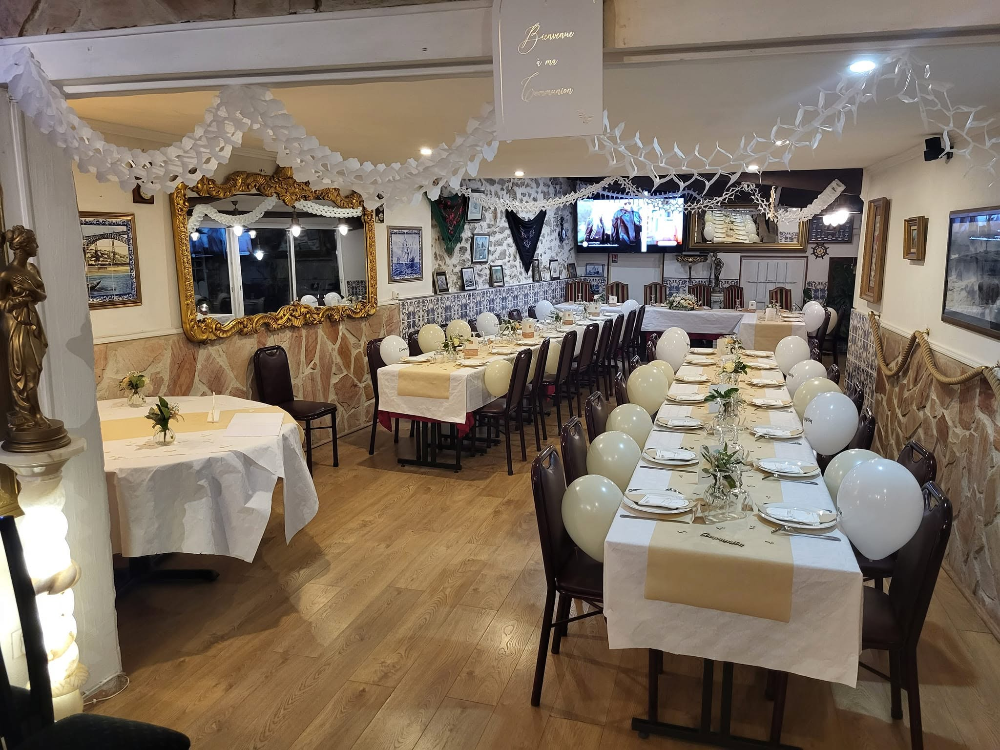

Le goût du Portugal,
à votre table
Morue rôtie à l'ail, poulpe grillé, riz crémeux aux fruits de mer, viandes au four… Une cuisine généreuse et familiale, servie entre pierres et azulejos, sur la N20 aux portes de Paris.

Une table familiale
et généreuse
Sur la N20 à Ballainvilliers, le Comptoir du Portugal sert la cuisine que l'on partage là-bas : bacalhau rôti à l'ail, poulpe grillé à l'huile d'olive, cozido à portuguesa, riz aux fruits de mer — des plats francs, copieux, préparés avec soin.
Entre murs de pierre et azulejos, la salle a l'âme des maisons de famille : on y fête les communions, les anniversaires et les retrouvailles — et certains soirs, le fado s'invite à table.
Nos réceptions →Ce que l'on vient chercher ici
Un aperçu — la carte complète vous attend au restaurant.
Morue rôtie à l'ail et à l'huile d'olive, pommes de terre fondantes — le grand classique de la maison.
Riz crémeux aux fruits de mer, gambas et coriandre fraîche, servi bien chaud.
Grosses gambas dorées, sauce à l'ail et aux épices, servies avec riz ou frites fines.
La saudade se chante à table
Guitare portugaise, viola et voix — régulièrement, le restaurant vit à l'heure de Lisbonne. Places limitées, réservation conseillée.
Communions, baptêmes,
anniversaires
La salle se prête aux grandes occasions : longues tablées dressées, décoration aux couleurs de votre fête, menus de groupe construits ensemble — jusqu'au cochon de lait entier, sur commande.
Organiser une réception →
Plats à emporter & commandes
Vos plats préférés préparés à emporter — et le cochon de lait entier sur commande pour vos grandes occasions.
Un coup de fil suffit : 01 69 01 91 58